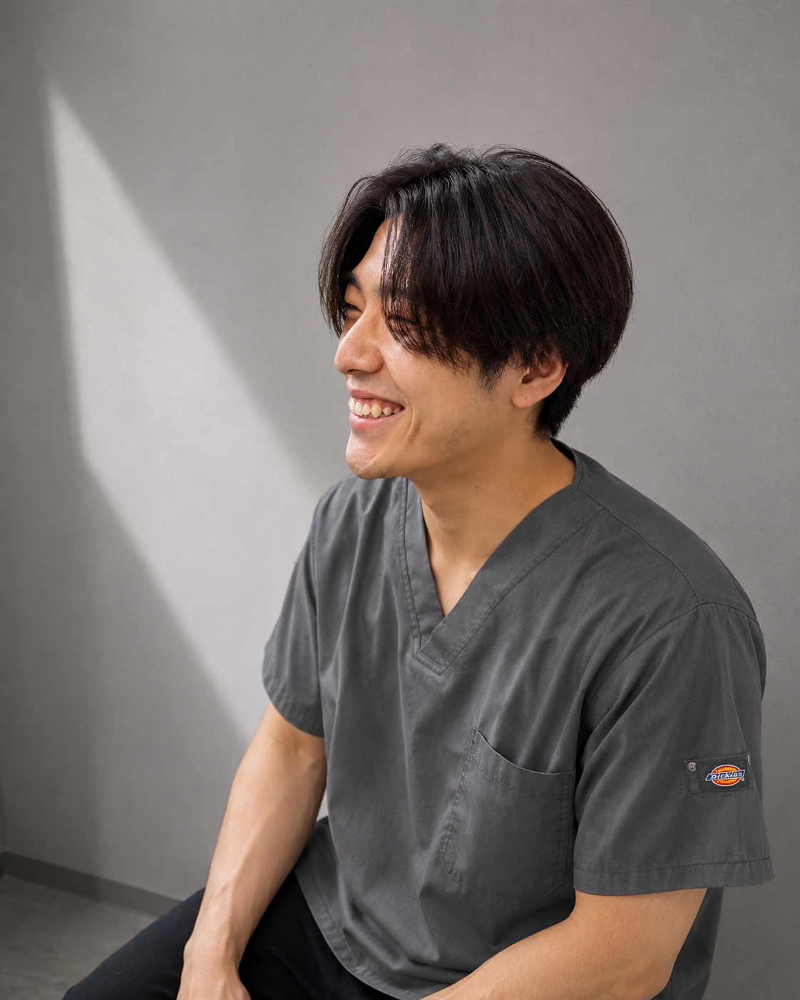

FIRST VISIT
世の中には「年齢のせい」「どこへ行っても同じ」と、好きな趣味や日常の楽しみを諦めてしまっている方が少なくありません。私は、そんな方々の受け皿になりたいという想いでこの院をオープンしました。その場しのぎの対症療法ではなく、解剖学に基づいた本質的なアプローチで、10年後も「自分の足でどこへでも行ける」自信を取り戻す場所。それが当院の存在意義です。

Haruki Seto
瀬 戸 東 希
父が守ったこの場所で、
地域に根差した『本質的な改善』を
瀬戸整骨院は、私の父が草加市氷川町で長年営んできた治療院を前身としています。生まれ育ったこの街で、父の背中を見て育った私にとって、地域の方々の健康を支えることはごく自然な志となりました。
大学卒業後、「佐藤整形外科クリニック」にて5年以上、その後整骨院で約1年間研鑽を積みました。整形外科では累計1,000症例を超える外傷やリハビリテーションに携わり、医学的根拠に基づいたシビアな判断が求められる現場を経験しました。
一時的な「慰安」や「緩和」だけでは、本当の意味で患者様の人生を豊かにすることはできないという現実があります。「また痛くなったらどうしよう」という不安を抱える方々に対し、医療現場で培った専門知識を活かし、身体の仕組みから紐解く「根本改善型施術」を届けたい。その場での変化はもちろん、10年後、20年後も「この街で元気に過ごせる」という安心を提供することが、私の使命です。
2026年7月、新しく生まれ変わる瀬戸整骨院は、単なる通院場所ではなく、あなたの「かかりつけ」として、痛みの先にある理想の生活を共に作るパートナーであり続けます。医学的根拠に基づいた確かな技術と、一人ひとりに寄り添う丁寧な対話。この二つを大切に、地域の皆様の健康寿命を延ばし、生活の質を高めることに全力を尽くします。
A.「バキバキ」と音を鳴らすような強い刺激は行いません。医学的根拠に基づいた、身体に負担の少ないソフトな手技ですので、年齢を問わず安心して受けていただけます。
A.動きやすい服装が理想的です。お仕事帰りなどお召し替えが必要な場合も、当院で専用の着替えをご用意しております。
A.お身体の状態により異なりますが、初診時に「再発予防」から逆算した最適なロードマップをご提示します。無理な引き延ばしは一切いたしません。
当院は、不調の「真犯人」を特定し、身体を根本から変えることを目的としています。単なる一時的な心地よさを求める慰安的な揉みほぐしではなく、症状の解決と再発予防のための時間を最優先します。
目標（ゴール）を決めずに通い続けるのではなく、卒業を見据えた計画的なサポートを行います。ご自身でも身体をコントロールできるようになるまで、プロのパートナーとして伴走します。